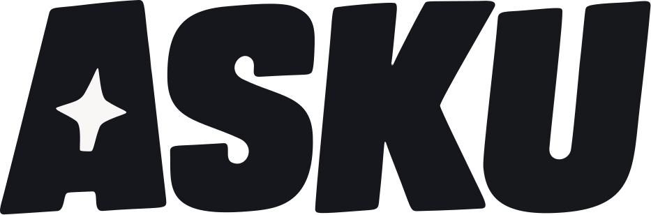
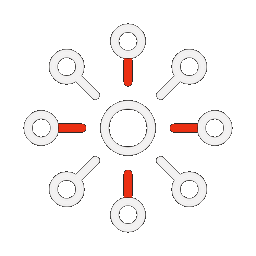
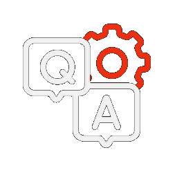

대학교 웹사이트를 자동으로 크롤링해 지식 그래프를 만들고,근거를 갖춘 답변을 제공하는 Graph RAG 기반 QA 시스템입니다.


엔티티와 관계로 흩어진 학교 정보를 하나의 구조로 엮습니다.
그래프와 벡터를 함께 검색해 관계를 잇는 복합 질문에 강합니다.
모든 답변에 원문 링크를 붙여 출처를 확인할 수 있습니다.
주기적으로 다시 크롤링해 언제나 최신 정보를 유지합니다.
새로운 학교도 공지 URL 하나면 바로 추가됩니다.